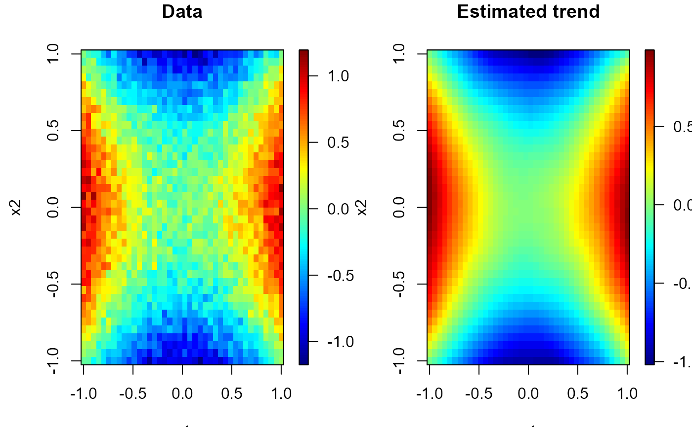
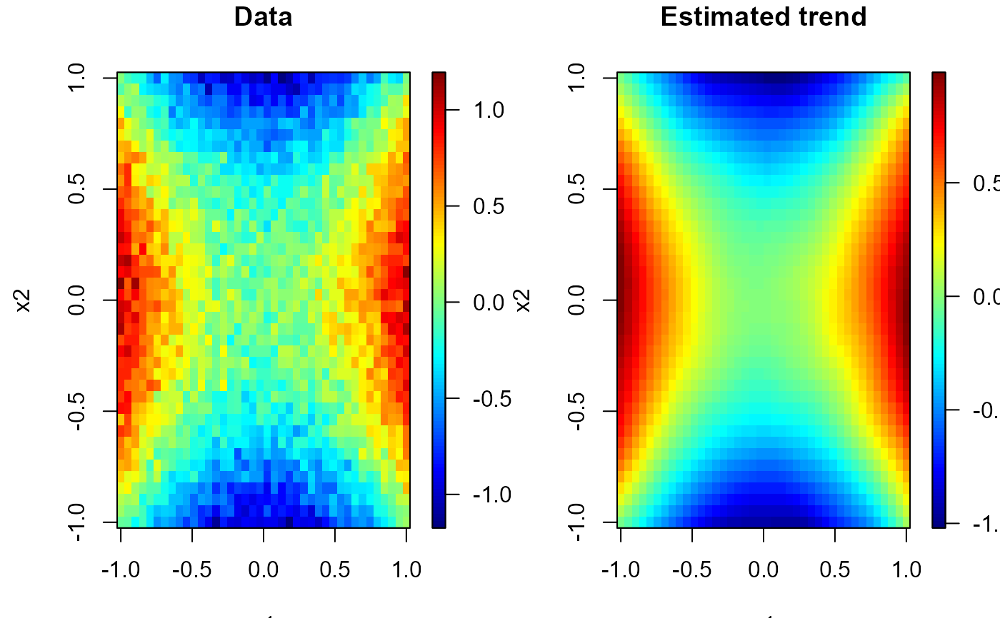

simage (generic function) draws an image (a grid of colored rectangles)
and (optionally) adds a legend strip with the color scale
(calls splot and image).
plot.np.den calls simage.data.grid
(contour and points also by default).
simage(x, ...)
# Default S3 method
simage(
x = seq(0, 1, len = nrow(s)),
y = seq(0, 1, len = ncol(s)),
s,
slim = range(s, finite = TRUE),
col = jet.colors(128),
breaks = NULL,
legend = TRUE,
horizontal = FALSE,
legend.shrink = 1,
legend.width = 1.2,
legend.mar = ifelse(horizontal, 3.1, 5.1),
legend.lab = NULL,
bigplot = NULL,
smallplot = NULL,
lab.breaks = NULL,
axis.args = NULL,
legend.args = NULL,
reset = TRUE,
xlab = NULL,
ylab = NULL,
asp = NA,
...
)
# S3 method for class 'data.grid'
simage(x, data.ind = 1, xlab = NULL, ylab = NULL, ...)
# S3 method for class 'np.den'
plot(
x,
y = NULL,
log = TRUE,
contour = TRUE,
points = TRUE,
col = hot.colors(128),
tolerance = npsp.tolerance(),
reset = TRUE,
...
)Arguments
- x
grid values for
xcoordinate. Ifxis a list, its componentsx$xandx$yare used forxandy, respectively. For compatibility withimage, if the list has componentzthis is used fors.- ...
additional graphical parameters (to be passed to
imageorsimage.default; e.g.xlim, ylim,...). NOTE: graphical arguments passed here will only have impact on the main plot. To change the graphical defaults for the legend use theparfunction beforehand (e.g.par(cex.lab = 2)to increase colorbar labels).- y
grid values for
ycoordinate.- s
matrix containing the values to be used for coloring the rectangles (NAs are allowed). Note that
xcan be used instead ofsfor convenience.- slim
limits used to set up the color scale.
- col
color table used to set up the color scale (see
imagefor details).- breaks
(optional) numeric vector with the breakpoints for the color scale: must have one more breakpoint than
coland be in increasing order.- legend
logical; if
TRUE(default), the plotting region is splitted into two parts, drawing the image plot in one and the legend with the color scale in the other. IfFALSEonly the image plot is drawn and the arguments related to the legend are ignored (splotis not called).- horizontal
logical; if
FALSE(default) legend will be a vertical strip on the right side. IfTRUEthe legend strip will be along the bottom.- legend.shrink
amount to shrink the size of legend relative to the full height or width of the plot.
- legend.width
width in characters of the legend strip. Default is 1.2, a little bigger that the width of a character.
- legend.mar
width in characters of legend margin that has the axis. Default is 5.1 for a vertical legend and 3.1 for a horizontal legend.
- legend.lab
label for the axis of the color legend. Default is no label as this is usual evident from the plot title.
- bigplot
plot coordinates for main plot. If not passed these will be determined within the function.
- smallplot
plot coordinates for legend strip. If not passed these will be determined within the function.
- lab.breaks
if breaks are supplied these are text string labels to put at each break value. This is intended to label axis on a transformed scale such as logs.
- axis.args
additional arguments for the axis function used to create the legend axis (see
image.plotfor details).- legend.args
arguments for a complete specification of the legend label. This is in the form of list and is just passed to the
mtextfunction. Usually this will not be needed (seeimage.plotfor details).- reset
logical; if
FALSEthe plotting region (par("plt")) will not be reset to make it possible to add more features to the plot (e.g. using functions such as points or lines). IfTRUE(default) the plot parameters will be reset to the values before entering the function.- xlab
label for the x axis, defaults to a description of
x.- ylab
label for the y axis, defaults to a description of
y.- asp
the y/x aspect ratio, see
plot.window.- data.ind
integer (or character) with the index (or name) of the component containing the values to be used for coloring the rectangles.
- log
logical; if
TRUE(default),log(x$est)is ploted.- contour
logical; if
TRUE(default), contour lines are added.- points
logical; if
TRUE(default), points atx$data$xare drawn.- tolerance
tolerance value (lower values are masked).
Value
Invisibly returns a list with the following 3 components:
- bigplot
plot coordinates of the main plot. These values may be useful for drawing a plot without the legend that is the same size as the plots with legends.
- smallplot
plot coordinates of the secondary plot (legend strip).
- old.par
previous graphical parameters (
par(old.par)will reset plot parameters to the values before entering the function).
Side Effects
After exiting, the plotting region may be changed
(par("plt")) to make it possible to add more features to the plot
(set reset = FALSE to avoid this).
Examples
# Regularly spaced 2D data
nx <- c(40, 40) # ndata = prod(nx)
x1 <- seq(-1, 1, length.out = nx[1])
x2 <- seq(-1, 1, length.out = nx[2])
trend <- outer(x1, x2, function(x,y) x^2 - y^2)
simage( x1, x2, trend, main = 'Trend')
 # Multiple plots
set.seed(1)
y <- trend + rnorm(prod(nx), 0, 0.1)
x <- as.matrix(expand.grid(x1 = x1, x2 = x2)) # two-dimensional grid
# local polynomial kernel regression
lp <- locpol(x, y, nbin = nx, h = diag(c(0.3, 0.3)))
# 1x2 plot
old.par <- par(mfrow = c(1,2))
simage( x1, x2, y, main = 'Data', reset = FALSE)
simage(lp, main = 'Estimated trend', reset = FALSE)

par(old.par)
# Multiple plots
set.seed(1)
y <- trend + rnorm(prod(nx), 0, 0.1)
x <- as.matrix(expand.grid(x1 = x1, x2 = x2)) # two-dimensional grid
# local polynomial kernel regression
lp <- locpol(x, y, nbin = nx, h = diag(c(0.3, 0.3)))
# 1x2 plot
old.par <- par(mfrow = c(1,2))
simage( x1, x2, y, main = 'Data', reset = FALSE)
simage(lp, main = 'Estimated trend', reset = FALSE)

par(old.par)